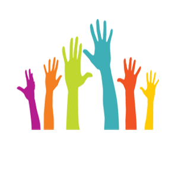

VOLUNTARIADO
Estrategia que brinda la oportunidad a los empleados de las empresas por medio de su estrategia de RSE o desde las áreas de gestión humana implementar proyectos que manifiestan su compromiso con el desarrollo comunitario.
Se realizan actividades como:
Celebración día del niño y Navidad, jornadas de salud, jornadas de recreación.